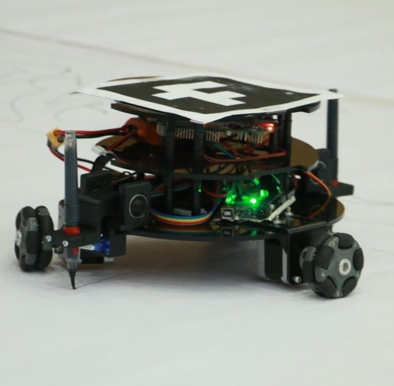

HolAbot – Holonomic Art Robot (eYRC 2022-23 AIR-3)
Omni-wheel robot with pen actuation, feedback and controller nodes, and WiFi socket communication system.
Contact: +91 8149463727 • Mail ID: prasannagebise35226@gmail.com
Omni-wheel robot with pen actuation, feedback and controller nodes, and WiFi socket communication system.
Holonomic base + URDF-based serial manipulator with UV disinfectant module. SLAM in Gazebo with custom world. Patent Published.
Omni-wheel stabilization, LQR controller, and NRF-based transmitter-receiver.
Design and fabrication of a hybrid VTOL platform — structural design, CAD, CFD, component selection and integration.
Implemented onboard Visual Inertial Odometry and LQR controller for non-GPS indoor stabilization and control.
VIO (Visual Inertial Odometry) pipeline demo on hardware.
LQR (Linear quadratic regulator) demo in Gazebo simulation.
Developed a manipulator testbed for upper limb rehabilitation. Practical contributions include sensor integration, real-time force control of end effector using SbRIO & LabVIEW and theoretical contributions include analytical approach for forward kinematics solution of CDPM and tension optimization via QP.
Implemented KF, FSM, Visual SLAM, SfM reconstruction, feature extraction (ORB/SIFT/SURF) and deployments on Jetson Orin NX & Raspberry Pi 5.
Demo video of Visual SLAM using ORB-SLAM and stereo camera setup.
Demo video of Drone-in-a-box project.